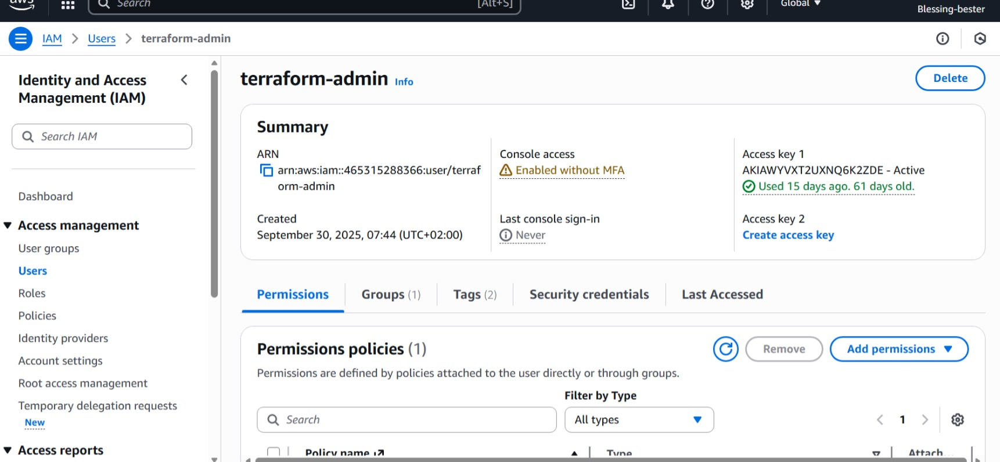
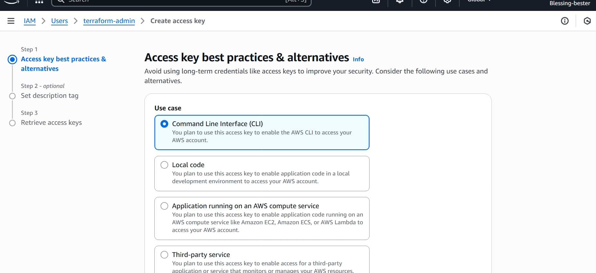
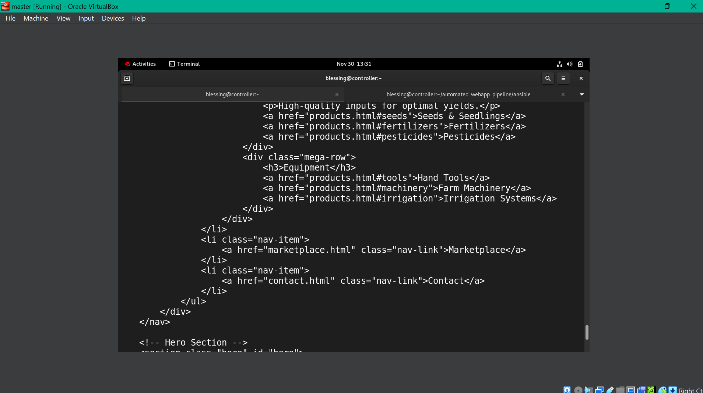

📋 Project Overview
This project demonstrates a complete DevOps workflow, showcasing Infrastructure as Code (IaC), Configuration Management, and Continuous Integration/Continuous Deployment (CI/CD) practices on AWS Free Tier.
🎯 Objective
Build an automated deployment pipeline that provisions cloud infrastructure and deploys applications with zero manual intervention.
💡 Key Features
- ✓ Modular Infrastructure Code
- ✓ Automated Configuration
- ✓ Complete CI/CD Pipeline
- ✓ Security Best Practices
🎓 Learning Goals
Master IaC principles, automation scripting, cloud infrastructure management, and modern DevOps practices.
🛠️ Technologies Used
| Category | Technology | Purpose |
|---|---|---|
| Infrastructure as Code | Terraform | Provision AWS resources (VPC, EC2, Security Groups) |
| Configuration Management | Ansible | Configure servers and deploy applications |
| CI/CD | GitHub Actions | Automate testing, building, and deployment |
| Cloud Provider | AWS Free Tier | Host infrastructure (EC2, VPC, IAM) |
| Scripting | Bash | Automation and orchestration scripts |
| Web Server | Nginx | Serve web application |
🏗️ System Architecture
Deployment Pipeline Flow
📝 GitHub Repository
→
🔄 GitHub Actions
→
🏗️ Terraform
→
☁️ AWS Infrastructure
→
⚙️ Ansible
→
🌐 Deployed App

Complete system architecture showing VPC, subnets, EC2, and security groups
🌐 Infrastructure Components
1Network Layer
- VPC: 10.0.0.0/16 - Isolated network environment
- Public Subnet: 10.0.1.0/24 - Hosts web servers
- Internet Gateway: Enables public internet access
- Route Tables: Routes traffic appropriately
2Compute Layer
- EC2 Instance: t3.micro (Free Tier eligible)
- AMI: Rhel 9
- Storage: 12GB gp2 EBS volume
- Auto-assigned Public IP: For external access
3Security Layer
- Security Group Rules:
- Port 22 (SSH) - Administrative access
- Port 80 (HTTP) - Web traffic
- Port 443 (HTTPS) - Secure web traffic
- IAM Roles: Least privilege access
- SSH Key Pairs: Secure authentication
⚙️ Environment Setup
📦 Prerequisites
Required Accounts & Tools
- AWS Account (Free Tier)
- GitHub Account
- Terraform >= 1.6.0
- Ansible >= 2.15.0
- AWS CLI v2
- Git
- SSH client
🔐 AWS Configuration

Creating IAM user with programmatic access in AWS Console
# Configure AWS CLI with credentials
aws configure
# AWS Access Key ID: [your-access-key]
# AWS Secret Access Key: [your-secret-key]
# Default region: us-east-1
# Default output format: json
# Verify configuration
aws sts get-caller-identity

Creating EC2 key pair in AWS Console
⚠️ Important: Download and securely store your EC2 private key (.pem file). Set proper permissions:
chmod 600 devops-project-key.pem
📁 Project Structure
devops-resume-project/
├── .github/
│ └── workflows/
│ ├── deploy.yml # CI/CD deployment pipeline
│ └── destroy.yml # Infrastructure teardown
├── terraform/
│ ├── modules/
│ │ ├── network/ # VPC, subnets, routing
│ │ │ ├── main.tf
│ │ │ ├── variables.tf
│ │ │ └── outputs.tf
│ │ └── compute/ # EC2, security groups
│ │ ├── main.tf
│ │ ├── variables.tf
│ │ └── outputs.tf
│ └── environments/
│ └── dev/
│ ├── main.tf
│ ├── variables.tf
│ └── outputs.tf
├── ansible/
│ ├── playbooks/
│ │ └── deploy_webapp.yml
│ ├── templates/
│ │ └── nginx.conf.j2
│ ├── inventory/
│ │ └── hosts
│ └── ansible.cfg
├── app/
│ └── index.html # Web application
├── scripts/
│ ├── deploy.sh # Automated deployment
│ └── destroy.sh # Cleanup script
├── .gitignore
└── README.md
🔨 Implementation Details
1️⃣ Terraform Infrastructure Code
Modular Terraform configuration for provisioning AWS resources.
Network Module (VPC & Networking)
# terraform/modules/network/main.tf
resource "aws_vpc" "main" {
cidr_block = var.vpc_cidr
enable_dns_hostnames = true
enable_dns_support = true
tags = {
Name = "${var.project_name}-${var.environment}-vpc"
Environment = var.environment
}
}
resource "aws_internet_gateway" "main" {
vpc_id = aws_vpc.main.id
tags = {
Name = "${var.project_name}-${var.environment}-igw"
}
}
resource "aws_subnet" "public" {
vpc_id = aws_vpc.main.id
cidr_block = var.public_subnet_cidr
map_public_ip_on_launch = true
tags = {
Name = "${var.project_name}-${var.environment}-public-subnet"
}
}

Terraform Init, Terraform Plan and Terraform Apply
Compute Module (EC2 & Security)
# terraform/modules/compute/main.tf
resource "aws_security_group" "web_sg" {
name = "${var.project_name}-${var.environment}-web-sg"
vpc_id = var.vpc_id
ingress {
description = "SSH"
from_port = 22
to_port = 22
protocol = "tcp"
cidr_blocks = ["0.0.0.0/0"]
}
ingress {
description = "HTTP"
from_port = 80
to_port = 80
protocol = "tcp"
cidr_blocks = ["0.0.0.0/0"]
}
egress {
from_port = 0
to_port = 0
protocol = "-1"
cidr_blocks = ["0.0.0.0/0"]
}
}
resource "aws_instance" "web_server" {
ami = data.aws_ami.amazon_linux_2.id
instance_type = var.instance_type
key_name = var.key_name
subnet_id = var.public_subnet_id
vpc_security_group_ids = [aws_security_group.web_sg.id]
tags = {
Name = "${var.project_name}-${var.environment}-web-server"
Environment = var.environment
}
}

Terraform Apply success
✅ Result: Infrastructure successfully provisioned with VPC, subnet, Internet Gateway, EC2 instance, and security groups all configured via code.
2️⃣ Ansible Configuration Management
Automated server configuration and application deployment.
Main Playbook
# ansible/playbooks/deploy_webapp.yml
---
- name: Deploy Web Application
hosts: webservers
become: yes
tasks:
- name: Update all packages
yum:
name: '*'
state: latest
update_cache: yes
- name: Install required packages
yum:
name:
- git
- nginx
- python3
state: present
- name: Copy application files
copy:
src: ../../app/
dest: "/opt/devops-resume-app/"
owner: webapp
group: webapp
- name: Configure Nginx
template:
src: ../templates/nginx.conf.j2
dest: /etc/nginx/conf.d/webapp.conf
notify: Restart nginx
- name: Ensure Nginx is started
systemd:
name: nginx
state: started
enabled: yes
handlers:
- name: Restart nginx
systemd:
name: nginx
state: restarted

Ansible Configuration
💡 Note: Ansible ensures idempotency - running the playbook multiple times produces the same result without duplicating efforts.
3️⃣ Bash Automation Scripts
Orchestration scripts for complete deployment automation.
#!/bin/bash
# scripts/deploy.sh
set -e
print_status() {
echo -e "\033[0;32m[INFO]\033[0m $1"
}
# Check requirements
check_requirements() {
print_status "Checking requirements..."
command -v terraform >/dev/null 2>&1 || { echo "Terraform not found"; exit 1; }
command -v ansible >/dev/null 2>&1 || { echo "Ansible not found"; exit 1; }
}
# Deploy infrastructure
deploy_infrastructure() {
print_status "Deploying infrastructure with Terraform..."
cd terraform/environments/dev
terraform init
terraform apply -auto-approve
cd ../../..
}
# Get EC2 IP and deploy application
deploy_application()

Bash Script Success
✅ Result: Infrastructure successfully provisioned with VPC, subnet, Internet Gateway, EC2 instance, and security groups all configured via code.